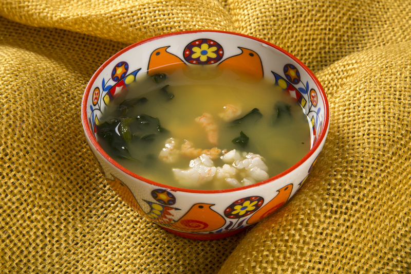

Tambaqui de forno, o delicioso peixe amazônico
o mais pedido
Tambaqui é um dos peixes mais deliciosos da culinária amazonense, e olha que tem muitos!
Delicioso Tacacá
prato indígena feito com jambu e camarão
Tacacá é um prato típico de origem paraense e leva em sua composição uma série de alimentos benéficos para o corpo, como o camarão.